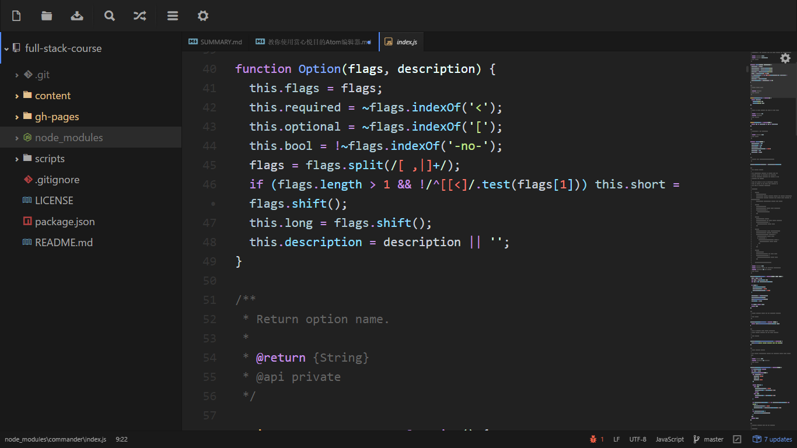

教你使用赏心悦目的Atom编辑器

在代码编辑器、文本编辑器领域，有着不少的「神器」级的产品，如历史悠久的 VIM、Emacs 以及如今当红的 SublimeText。另外还有 VS Code、EditPlus、NotePad++、UltraEdit 等一大堆流行的利器，可谓百家争鸣。
然而，作为目前全球范围内影响力最大的代码仓库/开源社区，GitHub 的程序员们并不满足于此。他们使用目前最先进流行的技术重新打造了一款称为“属于21世纪”的代码编辑器——Atom， 它开源免费跨平台，并且整合 GIT 并提供类似 SublimeText 的包管理功能，支持插件扩展，可配置性非常高……
下载和安装
https://atom.io/
命令面板
当你按下 cmd-shift-P 并且当前焦点在一个窗格上的时候，命令面板就会弹出来。
在这个教程中我们会用类似 cmd-shift-P 的形式来运行命令，这是 Atom 在 Mac 上的默认快捷键，如果你在其他的平台上使用 Atom, 可能会稍有不同。如果某个快捷键无法工作，你可以通过命令面板来查找正确的快捷键。
在 Atom 中几乎所有的操作都通过这种搜索驱动的菜单来完成，你只需要按下 cmd-shift-P 来搜索命令，而不必在复杂的传统菜单栏间点来点去。

偏好设置
Atom 有很多选项和偏好设置，你可以在设置界面修改它们。

左侧目录树的修改
在 settings 中选择 open config folder，然后修改 style.less 文件，比如：
.tree-view {
font-size: 16px;
}
插件
tool-bar & tool-bar-main
这两个小插件可以让你的编辑器上方出现一行快捷操作小按钮，绝对是贴心服务。还可以设置大小和位置，如果不想出现在上方，出现在左侧下侧都可以，随你定制。
file-icons
丰富文件的 icon 前缀，绝对是赏心悦目的感受。
markdown-preview
可以在 Atom 编辑器中直接预览 markdown 文件。
autocomplete-paths
自动提示路径和文件名，很方便使用
docblockr
可以产出标准化的代码注释格式，效果：
/**
* [main description]
* @return {[type]} [description]
*/
emmet
支持 zen coding 的方式进行快捷代码书写，相信我，这绝对是个编码的享受。
minimap
让编辑器右侧出现 minimap，方便快速查看内容，小巧性感。
platformio-ide-terminal
知道这个是干什么的么，有了这个插件，你可以直接在 Atom 中非常方便的呼出 terminal 终端，不用来回切换，在 Atom 中编码调试，一站式搞定，一个字：就是爽的飞起。